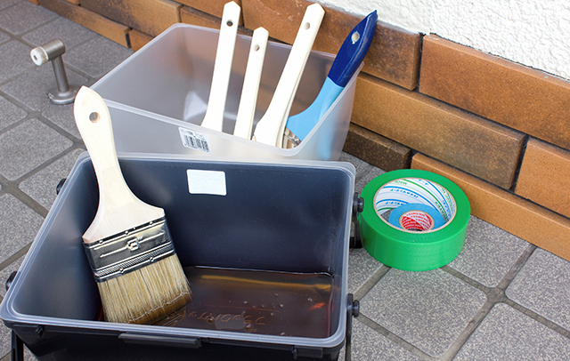

- TOP
- 外壁塗装業者の選び方
Select
外壁塗装業者を
選ぶポイント
ご自宅の外壁を塗り替えることになったとき、どなたでも迷われるのはどの業者に依頼するか、ということではないでしょうか。ていねいな仕事をしてくれるか、費用は適正か、気になるところはたくさんありますが、こちらでは、外壁塗装業者を選ぶポイントを5つに絞って解説します。ペイントワークスは2007年の創業以来、高品質・適正価格・地域に密着したサービスで、多くのお客様から厚い信頼をいただいています。当社なら、大切なご自宅の塗り替えを安心して任せていただけます。
塗装業者を選ぶ5つのポイント
選び方次第では費用だけ高く付いて、雑な仕事にがっかり──こんなこともあるので、塗装業者選びは慎重に。とくに下記のポイントは良質な業者を選ぶ目安になります。ぜひ、参考になさってください。
Point1 下請け業者を使わない
外壁塗装業者をうたってはいても、自社では職人を雇わず下請けとなる職人に仕事を回しているだけといったブローカーまがいの会社もあります。もちろん下請けでも、ていねいな仕事で評判の職人もいるでしょう。しかし、多元請会社の取り分が多くなるため、下請けはどうしても安値で働くことになり、結果として仕事が雑になってしまうケースがほとんど。また、当然ですが、中間マージンの分だけ費用が高く付くため、お客様にとってはメリットがありません。その点、全員が自社スタッフのペイントワークスなら、仕事もていねい。中間マージンも発生しないため料金もきわめて適正です。
Point2 作業日程にムリがない

外壁塗装では塗料よりも人件費にコストがかかります。それだけに、中には人的コストを浮かすために通常よりも少ない日数で作業を終わらせる業者もあるので要注意です。省略されるのが日数だけなら問題ないのですが、多くの場合は肝心な工程を省いたり、手を抜いたりして雑な仕事になることが少なくありません。仕上がりを見ればわかりますが、そうした業者が作業すると塗りムラが目立ちます。なお、一般的な建築規模の家を塗り替える際は、最低でも1週間程度が必要ですが、見積もりの際、業者から工期を3～4日と提示されたら必要な工程が省略されていると疑ってかかるべきでしょう。
Point3 適正料金であること
外壁塗装の費用を安く上げるのは簡単。必要な工程を省き、手を抜き、職人の人数を減らして、施工期間を短くすればよいのです。でも、そうやって仕上がった外壁は塗装ムラが激しかったり、耐久性が著しく損なわれていたりして、後々、その補修のために余計な出費がかさんだり、予定していた年数を待たずに塗り替えの必要が生じたりして、結果として「大損」ということにもなりかねません。世間では「激安」をうたう塗装業者が増えていますが、その実態はまさにこれ。やはり、ていねいな仕上げ、高品質を求めるなら、適正料金を提示する業者に任せたいところです。
Point4 料金の根拠をしっかり説明してくれる
では、適正料金とはどういうことでしょう。わかりやすく言えば「料金の根拠」が明快だということ。見積もりを見て、作業や材料にどれだけの費用がかかるのか、その内訳が詳細にわたって具体的に示されていればその業者は適正的であり、提示された金額は適正料金と考えてよいでしょう。ただし、材料などの項目で「～一式」「～その他」といった曖昧な表現があれば要注意です。見積もり内容にあえて含みを持たせることで、後々、追加工事や作業が発生したと理由を後付けして当初より高額な請求をしようとする意図が感じられます。その点、ペイントワークスならお見積もりは作業ごとに詳細な金額が明示されているので安心です。
Point5 施工後のアフターフォローが充実
外壁塗装は施工してから後の経過が大事。塗ったばかりならどの業者が手がけたものでもきれいに見えるかもしれませんが、大事な工程を省くなど手抜き工事がされていると、わずか数年のうちに塗装面が剥がれたり、欠けたりすることも。それだけに外壁塗装もアフターフォローが肝心。施工が完了すればそれっきりで何もしてくれない業者には決して依頼してはいけません。手抜き工事の可能性が大だからです。その点、ペイントワークスは施工後も年1回の定期点検を実施。さらに、5年以内に不具合が見つかった場合は、無償補修をお約束しています。